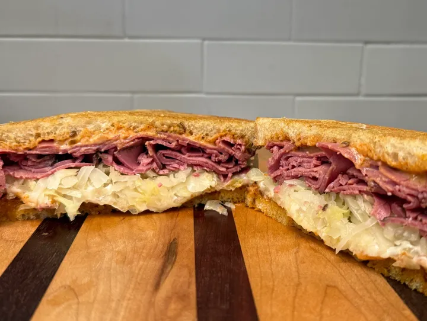
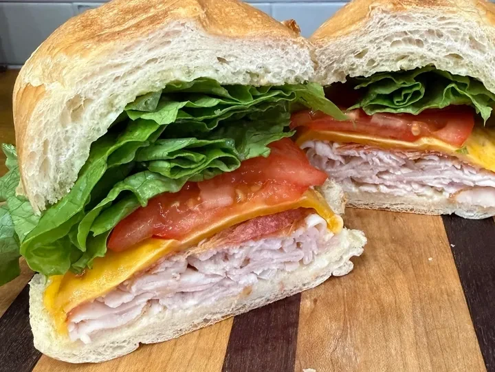
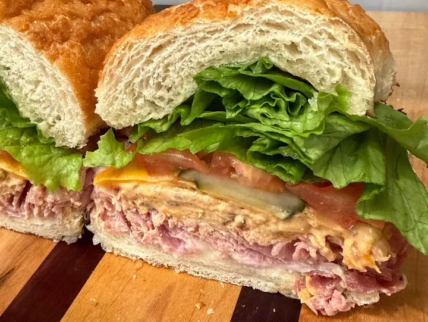
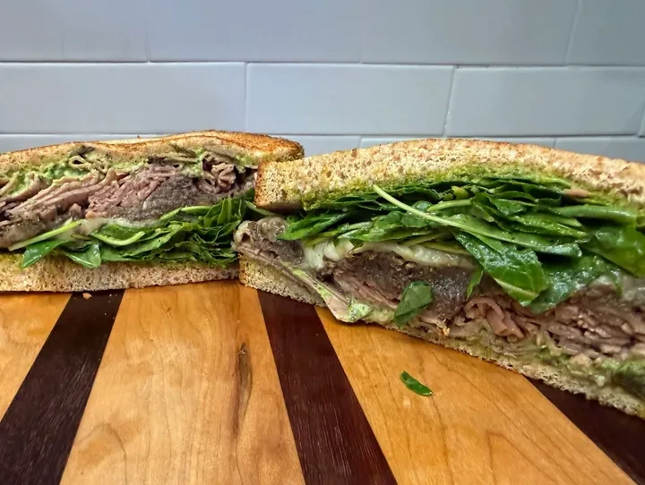
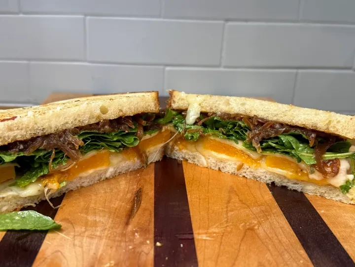
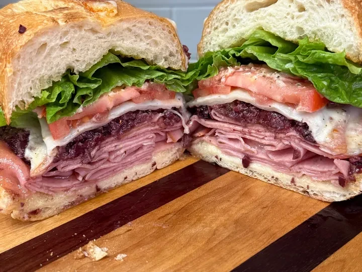
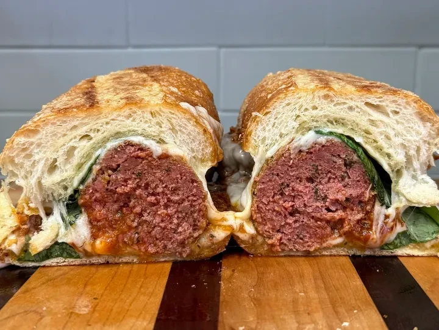
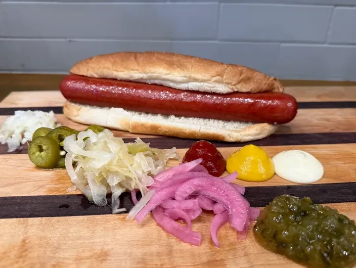

Rueben
Pastrami · Swiss Cheese · Sauerkraut · Thousand Island · Sliced Rye
Sandwich Menu
Handcrafted artisanal sandwiches, built to order on the bread of your choice: Dutch Crunch, Sweet Roll, Sliced Rye, or Sliced Sourdough.

Pastrami · Swiss Cheese · Sauerkraut · Thousand Island · Sliced Rye

Deli Turkey · Sliced Bacon · Cheddar · Lettuce · Tomato · Mayo

Ham · Cheddar · Pimento Cheese · Pickled Jalapeño · Mayo · Tomato · Lettuce

Roast Beef · Mushroom · Swiss · Mayo · Baby Kale · Balsamic Vinaigrette

Cheese · Caramelized Onions · Spaghetti Squash · Baby Kale · Apple Cider Vinegar Dressing

Mortadella · Provolone · Olive Spread · Italian Dressing · Lettuce · Tomato · Mayo

House Meatballs · Tomato Sauce · Provolone · Parmesan · Basil

Sauerkraut · Relish · Jalapeños · Pickles · Onions · Raw Onions · Ketchup · Yellow Mustard · Mayo